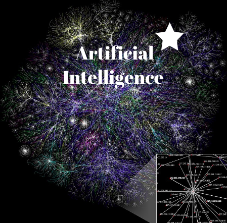

A Brief Introduction to Artificial Intelligence
Overview | Media | Author
Overview
Many assume that artificial intelligence (AI) is all about talking
robots and something that could one day take over the world by out
smarting humans, however this is not all what it is all about.
Artificial intelligence is actually complex algorithms that can
help make decisions using real time data, sensors, and its ability
to use different sources to come up with a solution, something that
only human intelligence can do. What brings this concept so much
attention is that if used and applied correctly, the AI program
can adapt and continue to learn from the endless stream of data
it is analyzing. With technology growing and advancing every day,
AI has also made extreme improvements since its first introduction
in the 1950s and gained positive feedback and hope from the population,
however it has also raised some red flags and concerns considering
its capability to adapt and learn. Like with any new discoveries
there are pros and cons to AI as well even if its goal is to be
as made and function perfectly.
Some pros of artificial intelligence is their ability to perform
difficult tasks.
AI-powered machines are doing jobs humans either can't do or would
have to do very carefully. An example of this is space travel, if
there was a robot that can be
sent to Mars and can explore and collect data that it can send back
to stations on Earth, that would mean one less risky jobs for humans
to train for and execute. It can also provide error free processing,
which is something that a lot of businesses look for so that they
can perform other important and creative tasks. Finally, humans
can let machines with AI do the boring tasks for them, such as labor.
If there was a lawn mower or even on a more industrial scale, a
packaging belt, that will know what it is supposed to do and do
the job perfectly without constant attention or concern of malfunction,
it allows the more people to do other tasks that AI cannot do, yet.
Although a world where AI can perform all the difficult and
dangerous tasks sounds nice, there are also many problems and
concerns that brings some hesitation to the idea. AI can be as
smart as humans maybe even smarter, however they lack judgement
calls and emotion. It still does not have the ability to determine
what is right or wrong which can heavily affect a school, a company,
or even worse, the economy, maybe even an entire society. Another
concern is that there are only a few amount of people who are
actually in control of these algorithms, they have the power to
either create bias in the program or even cause casualties. Lastly,
in a more practical sense and something that is the most likely to happen
is the loss of jobs for people. As mentioned before if a machine was
created and did a more efficient job on somethingthat would usually
take the labor of an entire team, all of those people would
potentially lose their jobs.
There is still a lot more work that needs to be done in order to
perfect the program's performance while also implementing integrity
to make sure that the concerns listed above do not happen. It seems
that AI is mostly beneficial to difficult tasks and research such
as space and deep sea exploration, surgeries and even rescue during
a disaster. A lot of money and attention is being put into the
advancement of AI and the many possibilites these machines and
technology can achieve that normally would take a human to be an
expert in.
“I’m increasingly inclined to think that there should be some
regulatory oversight, maybe at the national and international level,
just to make sure that we don’t do something very foolish.”
-Elon Musk warned at MIT's AeroAstro Centennial Symposium.
Top 5 Coding Languages Used for AI
- Python
- C++
- Java
- LISP
- Prolog
 Esther Kim
Esther Kim